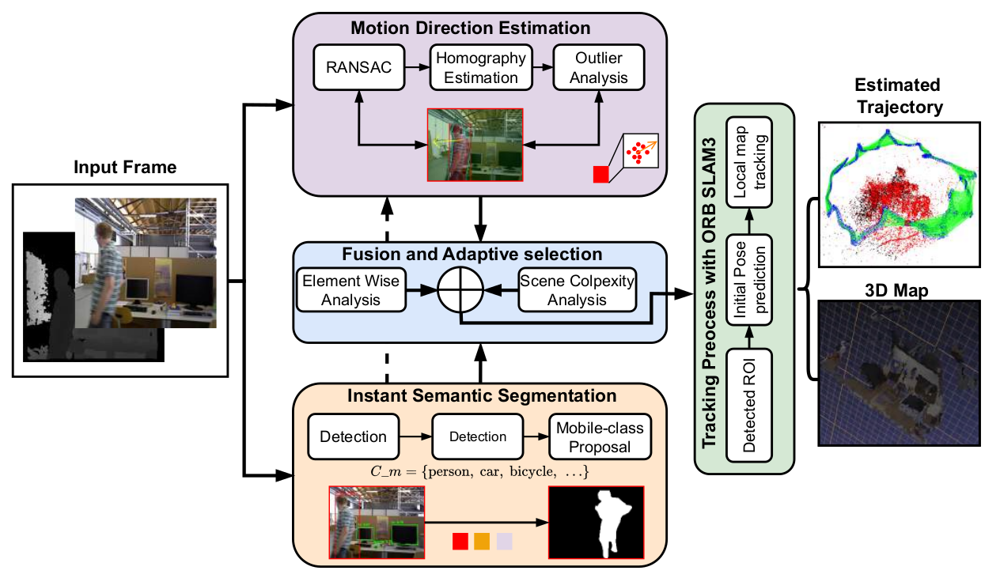

🎥 Video Demonstration & System Pipeline
Watch SAR-SLAM in action, handling dynamic environments with moving people and objects, alongside our system pipeline diagram:
The Problem
Visual SLAM systems track distinct visual features (corners, edges) across frames to estimate camera motion. When people or objects move through the scene, their features contaminate the tracking process, violating geometric constraints and leading to:
- ❌ Incorrect motion estimates from moving features
- ❌ Accumulated drift over time
- ❌ Complete tracking failure in crowded scenes
- ❌ Over-removal of valuable static features (e.g., a standing person)
Existing solutions are inadequate: semantic-only methods remove all potentially mobile objects (even when stationary), discarding 60%+ of features in texture-poor environments. Geometric-only methods struggle with noise and miss slowly moving objects. Current hybrid methods treat detection as binary, ignoring motion evolution over time.
Our Approach
SAR-SLAM implements a three-stage pipeline inspired by human visual processing:
SAR-SLAM System Pipeline
Key Innovation: Motion-Aware Filtering
When a person is detected in the scene, SAR-SLAM doesn't immediately discard all their features. Instead, it analyzes whether that person is actually moving by comparing their feature motion against estimated camera motion. A stationary person contributes stable features that strengthen tracking, while only features from truly moving objects are filtered.
Adaptive Scene Complexity Control
SAR-SLAM automatically adjusts its processing based on scene dynamics:
- Low complexity: Semantic detection only (empty corridors)
- Medium complexity: Geometric verification only (few people)
- High complexity: Full semantic + geometric fusion (crowded scenes)
Results
Comprehensive evaluation on the TUM RGB-D benchmark demonstrates SAR-SLAM's superior performance:
Comparison with State-of-the-Art
SAR-SLAM consistently outperforms contemporary methods across multiple metrics:
- ✅ Lowest ATE RMSE on highly dynamic sequences (fr3_walk_rpy: 0.033m vs. NGD-SLAM: 0.034m)
- ✅ Tightest error distribution indicating more reliable tracking
- ✅ Superior rotational stability (0.605°/s on fr3_walk_half)
- ✅ Maintains accuracy in static scenes without sacrificing dynamic robustness
Key Contributions
- Semantic Segmentation Module: YOLOv8-based detection of potentially dynamic objects with instance-level segmentation masks
- Geometric Motion Verification: RANSAC-based homography analysis to distinguish truly moving objects from stationary ones by analyzing feature correspondence patterns
- Adaptive Fusion Mechanism: Intelligent combination of semantic and geometric evidence with temporal consistency and coverage constraints to maintain system stability
- ROS 2 Integration: Modular implementation enabling seamless integration with robotic systems and compatibility with existing navigation frameworks
Citation
If you find this work useful, please consider citing:
Acknowledgments
This work is funded and supported by the European Regional Development Fund (ERDF) (ENABLING under grant No. ZS/2023/12/182056) and by the German Research Foundation (DFG) (SEMIAC under grant number No. 502483052).